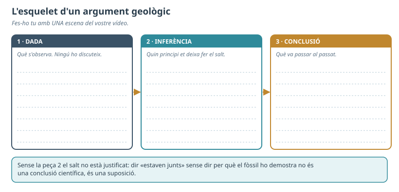
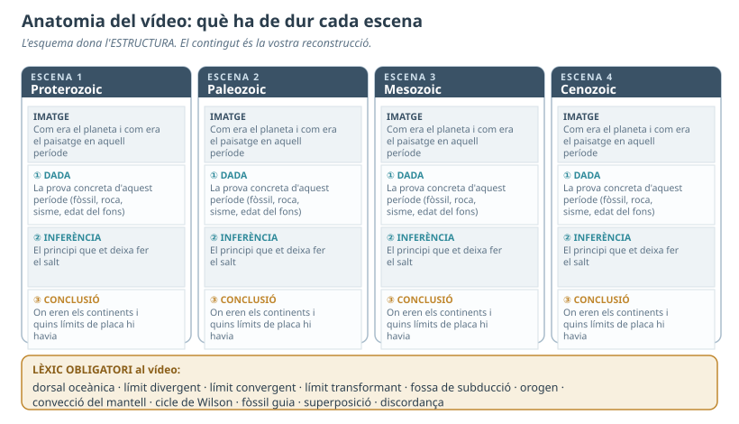
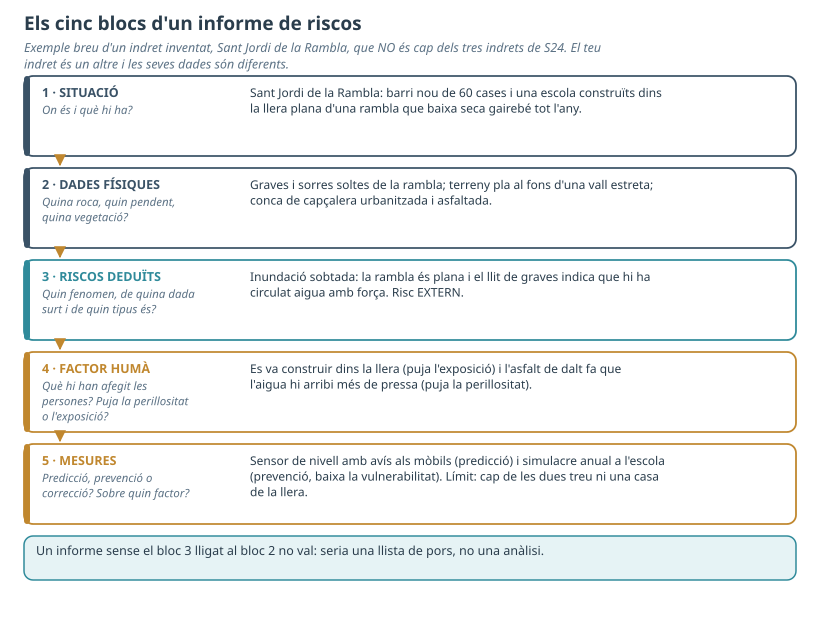
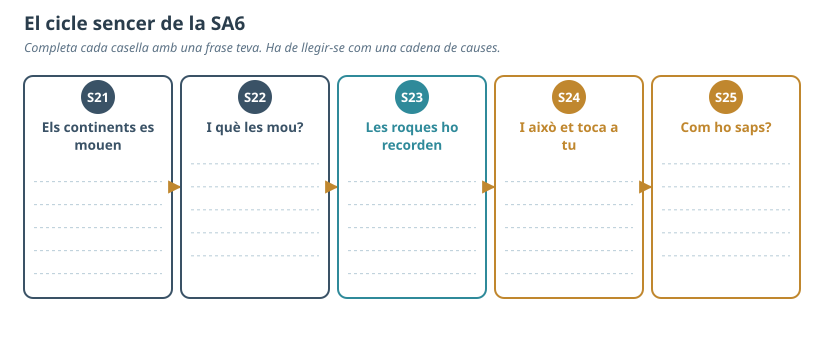

Mentre preparàveu el vídeo, hi va haver alguna cosa que vau haver de canviar respecte del que havíeu pensat al principi? Què us va fer canviar-la?
Hi havia alguna prova que no us encaixava? Què n'heu fet: l'heu explicada, l'heu deixada fora, o no us hi heu fixat?

Fig.1 · Omple'l amb una escena del vostre vídeo.
1a. Escriu ara l'escena en una sola frase amb la fórmula sencera — com que veiem que…, i sabem que…, podem concloure que… — i anomena el principi que justifica el salt (superposició, intersecció, actualisme, fòssil guia, edat del fons…).
1b. La prova més feble i per què ho és:
1c. La prova que faria caure la vostra explicació:

Fig.2 · El que hauria de tenir cada escena. Et serveix per decidir el nivell del primer criteri.
Exemple al criteri del lèxic: AN = fa servir bé les paraules; AE = a més les fa servir per explicar (no diu només «hi ha una dorsal», sinó per què allà hi ha d'haver una dorsal).
VÍDEO 1 Equip avaluat:
| Criteri | Nivell | Evidència concreta — del vídeo (què diuen i on) o de la resposta oral |
|---|---|---|
| Reconstrucció justificada Diu on eren els continents a cada període i ho justifica amb proves de tipus diferents, dient on són i de quin tipus són els límits de placa. | ||
| Coherència de l'ambientació Les imatges de cada període concorden amb el que el mateix equip afirma sobre la posició dels continents i el clima d'aquell moment. | ||
| Proves que no quadren (es valora amb la RESPOSTA ORAL) L'equip autor sap dir quina prova no li encaixava i per què li ha donat menys pes. Si diu que no n'hi havia cap, ha de poder dir com ho ha comprovat. | ||
| Predicció Prediu com continuarà el moviment dels continents i diu en què es basa. | ||
| Lèxic geològic Usa el lèxic de la unitat (dorsal, límits, subducció, convecció, cicle de Wilson, fòssil guia…) i el fa servir bé en el context, no només el diu. |
Comentari honest, concret i constructiu (què han fet bé, on; què milloraria i com):
VÍDEO 2 Equip avaluat:
| Criteri | Nivell | Evidència concreta — del vídeo (què diuen i on) o de la resposta oral |
|---|---|---|
| Reconstrucció justificada Diu on eren els continents a cada període i ho justifica amb proves de tipus diferents, dient on són i de quin tipus són els límits de placa. | ||
| Coherència de l'ambientació Les imatges de cada període concorden amb el que el mateix equip afirma sobre la posició dels continents i el clima d'aquell moment. | ||
| Proves que no quadren (es valora amb la RESPOSTA ORAL) L'equip autor sap dir quina prova no li encaixava i per què li ha donat menys pes. Si diu que no n'hi havia cap, ha de poder dir com ho ha comprovat. | ||
| Predicció Prediu com continuarà el moviment dels continents i diu en què es basa. | ||
| Lèxic geològic Usa el lèxic de la unitat (dorsal, límits, subducció, convecció, cicle de Wilson, fòssil guia…) i el fa servir bé en el context, no només el diu. |
Comentari del vídeo 2:
2a. El criteri que hauria de pesar més, i per què:
2b. El criteri que hi falta:
2c. El vostre punt feble i què hauríeu hagut de fer diferent des del principi:
2d. Després de llegir les coavaluacions rebudes: què refaríeu, i quina prova hauríeu buscat?

Fig.3 · El format tècnic, amb un exemple d'un indret inventat que no és cap dels tres de S24.
L'indret és el que vas analitzar a S24. Si no hi eres o no el recordes, tria'n un dels tres i mira'n les dades a la figura dels tres indrets de la fitxa de S24: (a) vessant cremat dels Ports · (b) delta de l'Ebre · (c) costa d'Alcanar-Vinaròs (falla d'Amposta i magatzem Castor).
3a. Situació. Quin indret analitzes i què hi ha exposat?
3b. Dades físiques. Acota-les tant com puguis; si no ho saps, digues què caldria consultar.
| Dada | Com és al teu indret | Acotació · o què caldria consultar |
|---|---|---|
| Litologia | ||
| Relleu | ||
| Vegetació |
3c. Riscos deduïts. Cada risc, lligat a la dada física d'on surt.
| Risc | De quina dada ho dedueixo | Intern / extern / induït | Cada quant o quina magnitud — o «no ho sé» |
|---|---|---|---|
3d. Factor humà. Separa: què hi ha de natural i inevitable, què és una decisió humana (i de quan) i què hi afegeix el canvi climàtic.
3e. Mesures.
| Mesura | Predicció / prevenció / correcció | Sobre quin factor | Qui la paga · qui hi surt perdent |
|---|---|---|---|
3f. Limitacions de l'informe. Què no cobreix, què no has pogut saber i què caldria mesurar per decidir de debò.
4a. Completa el mapa de manera que es llegeixi com una cadena de causes, no com una llista.

Fig.4 · El cicle sencer de la SA6. A la web hi ha la casella de S21 resolta com a exemple del nivell de detall.
| Idea de la SA6 | D'on ve la meva certesa |
|---|---|